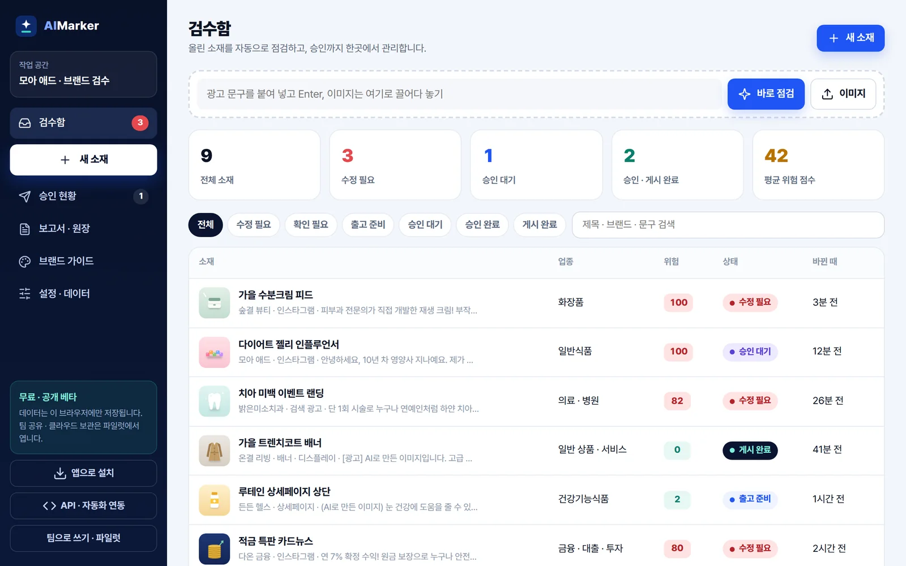
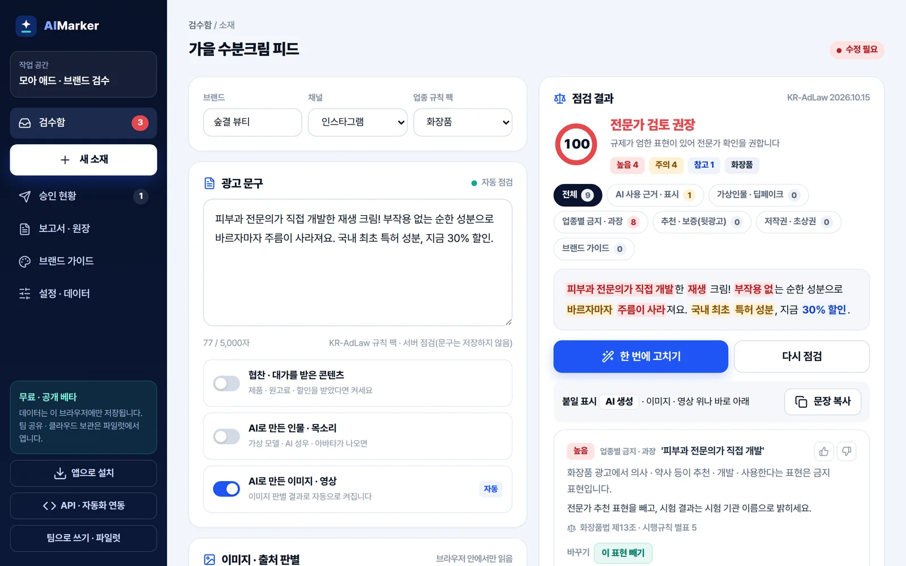

지금 쓰는 것, 다음에 열 것
Review자동 점검
KR-AdLaw 규칙 팩으로 6가지를 점검하고 위험 점수 · 결정 · 고칠 문구를 냅니다.
Approve승인
내부 확인과 로그인 없는 광고주 승인 링크. 답은 작업 공간에 자동 반영됩니다.
Proof증빙
검수 · 승인 보고서(PDF)와 원장 기록. 검증용 파일로 누구나 위변조를 확인합니다.
Label표시
AI 이미지 표시 넣기 · 파일 속 IPTC 기록, 사이트 자동 태그와 AI 활용 안내.
API연동
점검 · 일괄 점검 · 표시 문구 · 승인 링크 · 원장을 사내 시스템 · 시트 · 에이전트에서.
Team팀 · 클라우드
팀 공유 · 권한 · 다단계 승인 · 자사 이름 보고서 · 클라우드 보관.
Expert2차 검수
애매한 소재를 광고 규제 · AI 윤리 전문가가 의견서로 답합니다(법률 자문 아님).
Watch게시 후 감시
게시된 광고의 표시 누락 · 위반 표현 · 브랜드 사칭 · AI 가짜 전문가 광고를 찾습니다.

붙여 넣거나 끌어다 놓으면 끝
문구를 붙여 넣거나 이미지를 끌어다 놓으면 소재가 만들어지고 바로 점검합니다. 업종은 글로 알아보고, 협찬 · 가상인물 · AI 이미지는 문구와 이미지 판별로 스스로 켭니다. 직접 바꾸면 그대로 둡니다.
- 예시 소재 4개로 바로 둘러보기
- 검수함에서 수정 필요 · 승인 대기 · 게시 완료를 한눈에
위험 후보, 근거, 바꿀 말까지
문구를 멈추면 자동으로 점검합니다. 후보마다 근거 법령과 바꿀 말이 붙고, '한 번에 고치기'는 바꿀 말이 있는 표현과 꼭 필요한 표시('[광고]' · '[가상인물]')를 한 번에 넣은 뒤 다시 점검합니다.
- 위험 점수 0~100과 결정: 수정 후 출고 · 확인 후 출고 · 전문가 검토 권장 · 큰 위험 후보 없음
- 면책 문장은 빼고, 띄어쓰기 · 기호로 쪼갠 표현은 붙여서 찾음
- 판정이 틀리면 버튼 한 번으로 알림(규칙 팩을 고칠 때 씀)

광고주는 링크 하나로, 기록은 원장에
내부 확인 뒤 승인 링크를 만들어 카카오톡 · 메일로 보냅니다. 광고주는 로그인 없이 문구와 남은 후보를 보고 승인하거나 수정을 요청하고, 답은 작업 공간에 자동으로 들어옵니다.
- 승인 시각 · 승인한 분 · 해시가 원장에 남음
- 승인 뒤 문구가 바뀌면 새 버전으로 다시 요청하라고 알림
보고서는 PDF로, 위변조 검증은 누구나
기간 · 브랜드별 검수 · 수정 · 승인 결과를 한 장으로 만들고, 보고서 해시를 서버 시각과 함께 원장에 남깁니다. 받은 쪽은 검증용 파일을 aimarker.kr/verify/ 에 올려 그때 그대로인지 확인합니다.
- AI 이미지는 'AI 생성' 표시와 파일 속 IPTC 기록을 넣어 내려받기
- 사이트에는 자동 태그 · AI 활용 안내 배지
KR-AdLaw 검수 엔진은 이렇게 판단합니다
규칙과 가중치는 서버에서만 돌고, 화면과 API에는 결과만 내려갑니다.
- 글자 다듬기전각 → 반각, 보이지 않는 글자 빼기. 원문 위치 지도를 지켜 표시 자리가 어긋나지 않게정규화
- 쪼갠 표현 잇기'부.작.용 없는' 처럼 띄어쓰기 · 기호로 피해 간 표현을 붙여 쓴 글에서 다시 찾기회피 탐지
- 업종 · 깃발업종 6팩, 협찬 · AI 인물 · AI 이미지 깃발에 따라 규칙과 수준이 바뀜. 업종은 글로 자동 추정문맥
- 면책 · 부정 빼기'의약품이 아닙니다' · '없는 것은 아닙니다' 처럼 문장 뜻이 반대면 후보에서 뺌오탐 억제
- 점수 · 결정겹친 후보는 더 구체적인 규칙 하나만. 높음 30 · 주의 10 · 참고 2로 점수, 네 가지 결정설명 가능
필수 표시 검사
문구에 없는 것을 찾습니다. 협찬인데 '광고' 표시가 없거나 뒤에만 있는 경우, AI 인물인데 '가상인물'이 없는 경우, 건강기능식품 필수 문구, 의료 부작용 안내, 금융 금리 · 손실 안내.
보수적 출처 판별
C2PA · IPTC · 생성 도구 기록은 '확인됨', 파일 이름 흔적은 '가능성 높음', AI 생성물에 흔한 크기 · 편집 도구는 '확인 필요', 기록이 없으면 '확인 불가'. 없다고 단정하지 않습니다.
정확도 관리
정답을 정해 둔 시험 문장과 평범한 광고 문구로 배포마다 자동 채점해 놓침 · 잘못 찾음을 막습니다. 이용자의 판정 의견은 규칙 번호 · 판정 · 업종만 모아 다음 규칙 팩에 반영합니다.
업종 6 · 범주 6, 매달 갱신
법령 · 심사지침 · 적발 사례가 바뀌면 규칙 팩을 고쳐 배포합니다. 규칙 팩 버전은 점검 결과마다 함께 남습니다.